Агенты:
Jett
Представляющая Южную Корею Jett быстра и неуловима и может позволить себе рисковать чаще других. В любой стычке она заходит с флангов и быстро уничтожает растерявшегося противника.
Способности:
Q – "ПОДЪЕМ" 
Jett МГНОВЕННО взлетает в воздух.
E – "ПОПУТНЫЙ ВЕТЕР" 
Вызывает кратковременный порыв ветра. Используйте умение
повторно,
чтобы Jett совершила рывок в направлении своего движения. Если Jett стоит на
месте,
то
она делает рывок вперед.
C – "ВИХРЬ"
МГНОВЕННО бросает снаряд, превращающийся в ненадолго
закрывающее
обзор облако при столкновении с поверхностью. УДЕРЖИВАЙТЕ клавишу умения,
чтобы
менять
направление движения дыма с помощью прицела.
X – "БУРЯ КЛИНКОВ"
Вооружается набором высокоточных кинжалов, которые
перезаряжаются
после ликвидации противника. Нажмите кнопку ОГОНЬ, чтобы бросить один кинжал
в вашу
цель. Нажмите кнопку АЛЬТ. ОГОНЬ, чтобы бросить в цель все оставшиеся
кинжалы.
Neon
Способности:
Q - "ПРЫГАЮЩИЙ СНАРЯД"

МГНОВЕННО бросает энергетический снаряд, который отскакивает от
поверхности один раз. Когда снаряд касается поверхности, земля под ним электризуется
и происходит оглушающий взрыв.
E - "ПОВЫШЕННАЯ СКОРОСТЬ"
МГНОВЕННО накапливает заряд для повышения скорости. Находясь в
заряженном состоянии, нажмите кнопку АЛЬТ. ОГОНЬ, чтобы проскользить. Перезарядка
скольжения сбрасывается после каждых двух убийств.
C - "ЗАЩИТНЫЙ ТУННЕЛЬ"
ЗАПУСКАЕТ вперед по земле две параллельных линии подачи энергии.
Линии простираются на небольшое расстояние или до ближайшей поверхности, после чего
образуют два энергетических барьера, которые блокируют обзор и наносят урон
проходящим сквозь них врагам.
X - "НА ПОЛНУЮ МОЩЬ"
В течение короткого времени Neon использует всю свою энергию и
скорость. Нажмите кнопку ОГОНЬ, чтобы преобразовать энергию в смертоносный
электрический луч высокой точности. Время действия умения продлевается после каждого
убийства.
Phoenix
Способности:
Q – "КРУЧЕНАЯ ПОДАЧА"

Выбирает ослепляющую сферу, летящую по дуге и
взрывающуюся
вскоре
после броска. При взрыве сфера ослепляет всех игроков, смотревших на нее в
момент
взрыва. Нажмите кнопку ОГОНЬ, чтобы загнуть дугу сферы влево, и кнопку АЛЬТ.
ОГОНЬ –
вправо.
E – "ГОРЯЧИЕ РУКИ"
Выбирает огненный шар. Нажатием кнопки ОГОНЬ выпускается
огненный
шар, который взрывается после задержки или при падении на землю, создавая
охваченную
огнем область, наносящую урон противникам.
C – "ПЕКЛО"

Выбирает огненную стену. Нажатием кнопки ОГОНЬ вперед
выпускается
пламя, образующее стену огня. Она заслоняет обзор и наносит урон проходящим
через
нее
игрокам. УДЕРЖИВАЙТЕ КНОПКУ ОГОНЬ, чтобы изогнуть стену в сторону прицела.
X – "ВОЗВРАТ"
МГНОВЕННО помечает текущую позицию Phoenix. Если время
действия
умения истекает или если Phoenix погибает, пока оно действует, то он
воскресает в
точке,
где начал применять умение, с полным запасом здоровья.
Raze
Способности:
Q – "ВЗРЫВНОЙ РАНЕЦ"

МГНОВЕННО бросает взрывной ранец, прикрепляющийся к
поверхностям.
Используйте умение повторно, чтобы взорвать ранец, нанося урон и отталкивая
находящихся
рядом агентов. Raze не получает прямого урона от этого умения, но может
пострадать
при
падении, если ранец подбросит ее достаточно высоко в воздух.
E – "КАССЕТНАЯ ГРАНАТА"
Выбирает кассетную гранату. Нажмите кнопку ОГОНЬ, чтобы
бросить
гранату, которая взрывается, наносит урон и выпускает гранаты поменьше,
наносящие
урон
любому агенту в радиусе поражения.
C – "БОМБОТРОН"

Выбирает "Бомботрон". Нажмите кнопку ОГОНЬ, чтобы
выпустить его.
"Бомботрон" двигается по прямой и отскакивает от стен. При обнаружении цели
"Бомботрон"
мчится к ней по прямой и взрывается, нанося большой урон при столкновении.
X – "ГАСИМ СВЕЧИ!"
Выбирает ракетомет. Нажмите кнопку ОГОНЬ, чтобы выпустить
ракету,
наносящую огромный урон по большой области при контакте.
Reyna
Способности:
Q – "ПОГЛОЩЕНИЕ"
Когда Reyna убивает противника, на 3 секунды появляется
сфера
души.
Reyna МГНОВЕННО поглощает находящуюся поблизости сферу души, быстро
восполняя
здоровье.
При чрезмерном исцелении и превышении показателя в 100 лишнее здоровье
постепенно
рассеивается. Умение используется автоматически и не поглощает сферу во
время
действия
умения "ИМПЕРАТРИЦА".
E – "ИЗГНАНИЕ"
МГНОВЕННО поглощает находящуюся поблизости сферу души,
что дает
неуязвимость на 2 секунды. Во время действия умения "ИМПЕРАТРИЦА" также дает
невидимость.
C – "ЗЛОБНЫЙ ВЗГЛЯД"
Выбирает призрачный глаз. ПРИ АКТИВАЦИИ бросает глаз на
близкое
расстояние. Глаз ограничивает обзор всех противников, которые посмотрят на
него.
Глаз
можно уничтожить.
X – "ИМПЕРАТРИЦА"
СРАЗУ ЖЕ впадает в бешенство, повышая скорость стрельбы и
обращения с
оружием. При каждом убийстве время действия умения продлевается.
Yoru
Способности:
Q – "ОШЕЛОМЛЕНИЕ"

Нажмите кнопку умения, чтобы вырвать нестабильный
фрагмент
реальности. Нажмите кнопку ОГОНЬ, чтобы бросить фрагмент. При столкновении
фрагмента
с
твердой поверхностью возникает ослепляющая вспышка.
E – "НЕЗВАНЫЙ ГОСТЬ"
Выбирает нить портала. Нажмите кнопку ОГОНЬ, чтобы
послать портал
вперед, или АЛЬТ. ОГОНЬ, чтобы разместить неподвижную нить. Телепортируйтесь
по нити
с
помощью кнопки умения. Чтобы имитировать телепорт, нажмите кнопку
ИСПОЛЬЗОВАТЬ.
C – "ПРИМАНКА"
Выбирает эхо, которое при активации создает зеркальное
отражение
Yoru. Нажмите кнопку ОГОНЬ, чтобы послать эхо вперед, или АЛЬТ. ОГОНЬ, чтобы
разместить
неподвижное эхо. Чтобы послать эхо вперед, нажмите кнопку ИСПОЛЬЗОВАТЬ.
X – "ПРОСТРАНСТВЕННЫЙ ДРИФТ"
Выбирает маску, которая позволяет смотреть сквозь
измерения.
Нажмите
кнопку ОГОНЬ, чтобы переместиться в измерение, в котором Yoru неуязвим и
невидим для
врагов.
Breach
Использующий бионические усиления швед Breach полагается на мощные направленные взрывы, чтобы расчистить путь от агентов противника. Разрушительная сила его умений позволяет получить решающее преимущество в любом бою.
Способности:
Q – "ОСЛЕПЛЯЮЩИЙ ЗАРЯД" 
Выбирает ослепляющий заряд. Нажмите кнопку ОГОНЬ, чтобы запустить
его через стену. Заряд ослепит всех смотрящих в его сторону игроков.
E – "ТРЕЩИНА"
Выбирает сейсмический заряд. УДЕРЖИВАЙТЕ КНОПКУ ОГОНЬ, чтобы
увеличить дальность разлома. ОТПУСТИТЕ, чтобы создать разлом, оглушающий всех
игроков в зоне поражения.
C – "ПРОБИВНОЙ УДАР"
Выбирает взрывной заряд. Нажмите кнопку ОГОНЬ, чтобы запустить
заряд через стену и создать взрыв на другой стороне. Взрыв наносит серьезный урон
всем, кто попадает в зону поражения.
X – "РАСКАТ ГРОМА"
ВЫБИРАЕТ сейсмическую волну. Нажмите кнопку ОГОНЬ, чтобы
запустить цепочку взрывов в обширной области перед собой. Эти взрывы оглушают и
подбрасывают в воздух все на своем пути.
Fade
Способности:
Q – "ЗАХВАТ"
Выбирает чернильную сферу. Нажмите кнопку ОГОНЬ, чтобы бросить
ее. Спустя некоторое время сфера падает на землю, после чего взрывается и образует
область-ловушку, из которой трудно выбраться. Используйте умение повторно, чтобы
уронить сферу до того, как она сама упадет.
E – "ПРИЗРАК"
Выбирает кошмарную сущность. Нажмите кнопку ОГОНЬ, чтобы бросить
сферу. Спустя некоторое время сфера падает на землю, после чего превращается в
кошмарную сущность, которая раскрывает местоположение всех противников, попавших в
ее поле зрения. Противники могут уничтожить кошмарную сущность. Используйте умение
повторно, чтобы уронить сферу до того, как она сама упадет.
C – "ХИЩНИК"
Выбирает хищника. Нажмите кнопку ОГОНЬ, чтобы послать хищника
вперед по прямой траектории. Хищник фокусируется на всех противниках и следах в поле
своего зрения и начинает охоту, ограничивая обзор пойманных целей. Удерживайте
кнопку ОГОНЬ, чтобы хищник двигался в направлении вашего прицела.
X – "ТЬМА"
Выбирает силу страха. Нажмите кнопку ОГОНЬ, чтобы создать волну
энергии Кошмара, проходящую сквозь стены. Эта энергия оглушает противника и наносит
ему периодический урон, а также раскрывает путь к нему.
Gekko
Способности:
Q – "БЕГУН"

ВЫБИРАЕТ Бегуна. Нажмите ОГОНЬ, чтобы отправить Бегуна вперед
искать противников. Бегун высвобождает энергию в сторону первого увиденного врага,
совершая оглушающий взрыв. Нажмите АЛЬТ. ОГОНЬ, нацелившись на точку установки Spike
или на установленный Spike, чтобы Бегун установил или обезвредил его. Spike должен
быть в инвентаре Gekko, чтобы Бегун мог его установить. Когда энергия заканчивается,
Бегун превращается в шарик и бездействует. ВЗАИМОДЕЙСТВУЙТЕ с шариком, чтобы забрать
его, и спустя короткое время Бегун получит новый заряд энергии.
E – "КЛЯКСА"
ВЫБИРАЕТ Кляксу. Нажмите ОГОНЬ, чтобы запустить Кляксу высоко в
воздух и послать ее вперед. Зарядившись, Клякса запускает взрывающиеся сгустки
плазмы в сторону противников в зоне видимости. Когда энергия заканчивается, Клякса
превращается в шарик и бездействует. ВЗАИМОДЕЙСТВУЙТЕ с шариком, чтобы забрать его,
и спустя короткое время Клякса получит новый заряд энергии.
C – "ТЫДЫЩ"

ВЫБИРАЕТ Тыдыща. Нажмите ОГОНЬ, чтобы бросить Тыдыща, как
гранату. Нажмите АЛЬТ. ОГОНЬ, чтобы сделать бросок снизу. Коснувшись поверхности,
Тыдыщ разделяется, покрывая большую площадь, и после небольшой задержки взрывается.
X – "БАБАХ"
ВЫБИРАЕТ Бабах. Нажмите ОГОНЬ, чтобы установить мысленную связь с
Бабах и управлять ее передвижением по вражеской территории. Нажмите кнопку
АКТИВАЦИИ, чтобы Бабах сделала рывок вперед и устроила взрыв, замедлив врагов на
небольшом расстоянии от себя. Когда энергия заканчивается, Бабах превращается в
шарик и бездействует. ВЗАИМОДЕЙСТВУЙТЕ с шариком, чтобы забрать его, и спустя
короткое время Бабах получит новый заряд энергии. Повторный заряд Бабах можно
использовать только один раз.
KAY/O
Способности:
Q - "СВЕТ/ОВАЯ ГРАНАТА"

Выбирает ослепляющую гранату. Нажмите кнопку ОГОНЬ, чтобы
бросить ее. Граната быстро взрывается, ослепляя всех в зоне видимости.
E – "ЭПИ/ЦЕНТР"
Выбирает подавляющий клинок. Нажмите кнопку ОГОНЬ, чтобы бросить
его. Клинок взрывается в том месте, куда приземляется, и подавляет всех в радиусе
взрыва.
C – "ФРАГ/МЕНТ"

Выбирает взрывоопасный фрагмент. Нажмите кнопку ОГОНЬ, чтобы
бросить его. После приземления фрагмента происходит серия взрывов, каждый из которых
наносит практически смертельный урон врагам, находящимся в самом центре.
X – "NULL/CMD"
МГНОВЕННО заряжается энергией поляризованного радианита, которая
усиливает KAY/O и вызывает мощное излучение оттуда, где он находится.
Skye
Способности:
Q – "СЛЕДОПЫТ"
ВЫБИРАЕТ фигурку тасманийского волка. Нажмите кнопку ОГОНЬ,
чтобы вызвать хищника и управлять им. Нажмите ОГОНЬ еще раз, чтобы животное сделало
рывок вперед, вызвало оглушающий взрыв и нанесло урон пораженным врагам.
E – "ПУТЕВОДНЫЙ СВЕТ"
ВЫБИРАЕТ фигурку ястреба. Нажмите кнопку ОГОНЬ, чтобы послать
ястреба вперед. УДЕРЖИВАЙТЕ кнопку ОГОНЬ, чтобы ястреб летел в направлении вашего
прицела. Во время полета птицы используйте умение снова, чтобы ястреб превратился в
ослепляющую вспышку. Через короткое время вспышка достигает максимальной
интенсивности, пока ястреб летит.
C – "НОВАЯ ПОРОСЛЬ"
ВЫБИРАЕТ исцеляющую фигурку. УДЕРЖИВАЙТЕ кнопку ОГОНЬ, чтобы
лечить союзников в зоне видимости и действия. Можно использовать несколько раз, пока
весь запас лечения не израсходуется. Skye не может лечить себя.
X – "ИЩЕЙКИ"
ВЫБИРАЕТ фигурку ищеек. Нажмите кнопку ОГОНЬ, чтобы послать троих
ищеек, которые выслеживают ближайших противников. Ищейка ограничивает обзор у
найденной цели.
Sova
Способности:
Q – "ШОКОВАЯ СТРЕЛА"

Выбирает шоковую стрелу. Нажмите кнопку ОГОНЬ, чтобы выпустить
стрелу, летящую по прямой. При столкновении она срабатывает, нанося урон игрокам
поблизости. УДЕРЖИВАЙТЕ КНОПКУ ОГОНЬ, чтобы увеличить дальность выстрела. Нажатие
кнопки АЛЬТ. ОГОНЬ позволяет стреле отскакивать от стен до двух раз.
E – "РАЗВЕДСТРЕЛА"
Выбирает разведстрелу. Нажмите кнопку ОГОНЬ, чтобы выпустить
стрелу, летящую по прямой. При столкновении она активируется, обнаруживая
противников. УДЕРЖИВАЙТЕ КНОПКУ ОГОНЬ для увеличения дальности выстрела. Нажатие
кнопки АЛЬТ. ОГОНЬ позволяет стреле отскакивать от стен до двух раз.
C – "ДРОН-СОВА"
Выбирает дрона-сову. Нажмите кнопку ОГОНЬ, чтобы выпустить дрон и
получить контроль над его передвижением. Управляя дроном, нажмите кнопку ОГОНЬ,
чтобы выстрелить помечающим дротиком. При попадании в игрока дротик раскрывает его
позицию.
X – "ГНЕВ ОХОТНИКА"
Выбирает три дальнобойные стрелы, пробивающие стены особым мощным
импульсом. Нажмите кнопку ОГОНЬ, чтобы выпустить импульс по прямой перед агентом,
нанося урон и раскрывая позицию всех раненых врагов. Умение можно использовать еще
два раза, пока активен таймер.
Chamber
Одет с иголочки и вооружен до зубов. Chamber, французский конструктор оружия, уничтожает врагов с поразительной точностью. Уникальные умения этого нового стража позволяют эффективно защищаться, нейтрализовать врагов издалека и продумывать любой план до мельчайших подробностей.
Способности:
Q – "ОХОТНИК ЗА ГОЛОВАМИ" 
Нажмите кнопку умения, чтобы выбрать тяжелый пистолет. Нажмите
кнопку АЛЬТ. ОГОНЬ, чтобы прицелиться из этого пистолета.
E – "РАНДЕВУ"
Размещает телепорт-якорь. Находясь на земле в зоне действия
якоря, нажмите кнопку умения повторно, чтобы телепортироваться к нему. Якорь можно
подобрать и разместить заново.
C – "КОРОННЫЙ ПРИЕМ"
Размещает ловушку. Когда рядом оказывается противник, ловушка
срабатывает после короткой задержки и дестабилизирует небольшую область, враги в
которой замедляются. Ловушку можно подобрать и разместить заново.
X – "ДЕМОНСТРАЦИЯ СИЛЫ"
Нажмите кнопку умения, чтобы выбрать особо мощную снайперскую
винтовку, из которой можно убить врага любым прямым попаданием в верхнюю часть тела.
На месте гибели противника возникает поле, замедляющее игроков в его пределах.
Cypher
Способности:
Q – "КИБЕРКЛЕТКА"
МГНОВЕННО бросает клетку перед Cypher. АКТИВИРУЙТЕ ее, чтобы
ограничить обзор противников. Клетка издает особый звук, когда через нее проходят
противники.
E – "КАМЕРА"
ВЫБИРАЕТ шпионскую камеру. Нажмите кнопку ОГОНЬ, чтобы поместить
камеру на выбранном месте. Используйте умение снова, чтобы управлять ей. Во время
управления камерой нажмите кнопку ОГОНЬ, чтобы выстрелить отслеживающим дротиком.
При попадании в игрока дротик отмечает его местонахождение.
C – "РАСТЯЖКА"
ВЫБИРАЕТ растяжку. Нажмите кнопку ОГОНЬ, чтобы установить в
выбранном месте незаметную растяжку, соединяемую с противоположной стеной. Попавшие
в нее противники задерживаются и ненадолго обнаруживают себя, а через некоторое
время оглушаются. Растяжку можно снять и использовать ПОВТОРНО. Враги могут
уничтожить ее.
X – "НЕЙРОКРАЖА"
При МГНОВЕННОМ использовании на мертвом противнике вы получаете
информацию о вражеской команде. Через некоторое время будет дважды показано
местоположение всех живых соперников.
Killjoy
Способности:
Q – "ТРЕВОГОБОТ"
ВЫБИРАЕТ замаскированного бота-паука. Нажмите кнопку ОГОНЬ,
чтобы выпустить бота, который атакует противников, оказавшихся в его радиусе
действия. Достигнув цели, бот взрывается и делает противников в области взрыва
уязвимыми. УДЕРЖИВАЙТЕ кнопку умения, чтобы отозвать бота.
E – "ТУРЕЛЬ"
ВЫБИРАЕТ турель. Нажмите кнопку ОГОНЬ, чтобы установить турель,
которая автоматически отслеживает противников в 180-градусном секторе. Нажмите
кнопку АЛЬТ. ОГОНЬ, чтобы изменить направление турели. УДЕРЖИВАЙТЕ кнопку умения,
чтобы отозвать турель.
C – "НАНОРОЙ"
ВЫБИРАЕТ гранату "Улей". Нажмите кнопку ОГОНЬ, чтобы бросить
гранату. После приземления граната маскируется. Нажмите кнопку АЛЬТ. ОГОНЬ, чтобы
сделать бросок снизу. АКТИВИРУЙТЕ "Улей", чтобы выпустить рой наносящих урон
наноботов.
X – "БЛОКИРОВКА"
ВЫБИРАЕТ генератор поля блокировки. Нажмите кнопку ОГОНЬ, чтобы
установить генератор. Задерживает всех противников, находящихся в радиусе действия.
Противники могут вывести генератор из строя.
Sage
Способности:
Q - "СФЕРА ЗАМЕДЛЕНИЯ"
ВЫБИРАЕТ замедляющую сферу. Нажмите кнопку ОГОНЬ, чтобы бросить
замедляющую сферу вперед. После падения сфера создает поле, которое замедляет
игроков.
E – "СФЕРА ЛЕЧЕНИЯ"
ВЫБИРАЕТ сферу лечения. При наведении на раненого союзника и
нажатии кнопки ОГОНЬ активирует постепенное восстановление здоровья. Если Sage
ранена, то нажатие кнопки АЛЬТ. ОГОНЬ активирует эффект постепенного самоисцеления.
C – "СФЕРА БАРЬЕРА"

ВЫБИРАЕТ сферу барьера. Нажмите кнопку ОГОНЬ, чтобы создать
стену, которая затвердеет через несколько секунд. Нажмите кнопку АЛЬТ. ОГОНЬ, чтобы
повернуть стену перед установкой.
X – "ВОСКРЕШЕНИЕ"
ВЫБИРАЕТ воскрешающее умение. Наведите прицел на погибшего
союзника и нажмите кнопку ОГОНЬ, чтобы начать воскрешение. После небольшой задержки
цель вернется к жизни с полным запасом здоровья.
Astra
Astra управляет энергией, пространством и временем, меняя поле битвы по своему желанию. Полный контроль над астральной формой и талант стратегического предвидения позволяют агенту из Ганы опережать врага на целую вечность.
Способности:
Q – "ВЗРЫВ СВЕРХНОВОЙ"
Разместите звезды в Астральной форме (X) АКТИВИРУЙТЕ звезду,
чтобы вызвать "Взрыв свехновой". Он быстро заряжается и оглушает всех игроков в зоне
действия.
E – "ТУМАННОСТЬ"
Разместите звезды в Астральной форме (X) АКТИВИРУЙТЕ звезду,
чтобы преобразовать ее в "Туманность" (дым). Выберите звезду и нажмите клавишу (F),
чтобы вызвать "Рассеивание". Звезда возвращается и может быть размещена в другом
месте через некоторое время. Перед возвращением звезды "Рассеивание" на короткое
время формирует ложную "Туманность" на месте звезды.
C – "ГРАВИТАЦИОННЫЙ КОЛОДЕЦ""
Разместите звезды в Астральной форме (X) АКТИВИРУЙТЕ звезду,
чтобы создать "Гравитационный колодец". Игроки в области действия притягиваются к
центру. Затем "Гравитационный колодец" взрывается, ослабляя игроков внутри.
X – "АСТРАЛЬНАЯ ФОРМА / ПРОСТРАНСТВЕННЫЙ РАЗЛОМ"
Нажмите кнопку "АКТИВИРОВАТЬ" (X), чтобы войти в Астральную форму
и разместить звезды с помощью кнопки ОСНОВНОГО РЕЖИМА СТРЕЛЬБЫ. Затем звезды можно
снова активировать, чтобы создать "Импульс новой", "Туманность" или "Гравитационный
колодец". Когда "Пространственный разлом" заряжен, используйте кнопку ДОП. РЕЖИМА
СТРЕЛЬБЫ в Астральной форме для выбора первой точки, а затем кнопку ОСНОВНОГО РЕЖИМА
СТРЕЛЬБЫ для выбора второй точки. Возникнет "Пространственный разлом", который
проходит через выбранные точки. "Пространственный разлом" блокирует пули и сильно
снижает громкость звуков.
Brimstone
Способности:
Q – "ЗАЖИГАТЕЛЬНАЯ ГРАНАТА"
ВЫБИРАЕТ зажигательный гранатомет. Нажмите кнопку ОГОНЬ, чтобы
запустить гранату, которая падает и взрывается после остановки, образуя горящую
область, в которой все игроки получают урон.
E – "НЕБЕСНЫЙ ДЫМ"
ВЫБИРАЕТ тактическую карту. Нажмите кнопку ОГОНЬ, чтобы указать
места на карте для сброса дымовой завесы. Нажмите кнопку АЛЬТ. ОГОНЬ, чтобы
запустить несколько дымовых завес продолжительного действия, застилающих обзор в
указанной области.
C – "МАЯЧОК-СТИМУЛЯТОР"
МГНОВЕННО бросает себе под ноги маячок-стимулятор. После
приземления маячок повышает скорострельность и скорость передвижения ближайших
игроков.
X – "ОРБИТАЛЬНЫЙ УДАР"
ВЫБИРАЕТ тактическую карту. Нажмите кнопку ОГОНЬ, чтобы запустить
орбитальный удар, наносящий высокий периодический урон игрокам, находящимся в
выбранной зоне.
Harbor
Способности:
Q – "ЗАЛИВ"
ВВЫБИРАЕТ защитную водяную сферу. Нажмите кнопку ОГОНЬ, чтобы
бросить сферу. Нажмите кнопку АЛЬТ. ОГОНЬ, чтобы сделать бросок снизу. При
столкновении с землей сфера образует разрушаемый водяной щит, блокирующий пули.
E – "ГРЕБЕНЬ ВОЛНЫ"
ВЫБИРАЕТ водяную стену. Нажмите кнопку ОГОНЬ, чтобы отправить
вперед по земле мощный поток воды. УДЕРЖИВАЙТЕ кнопку ОГОНЬ, чтобы перемещать поток
в направлении прицела и создать стену вдоль этой траектории. Нажмите кнопку АЛЬТ.
ОГОНЬ во время создания траектории, чтобы остановить поток. Игроки, которых
коснулась вода, ЗАМЕДЛЯЮТСЯ.
C – "КАСКАД"
ВЫБИРАЕТ волну, проходящую сквозь стены. Нажмите кнопку ОГОНЬ,
чтобы отправить волну вперед. Используйте умение ПОВТОРНО, чтобы остановить
дальнейшее движение волны. Игроки, которых коснулась вода, ЗАМЕДЛЯЮТСЯ.
X – "РАСЧЕТ НАПРАВЛЕНИЯ"
ВЫБИРАЕТ силу артефакта. Нажмите кнопку ОГОНЬ, чтобы создать на
земле гейзерное озеро. В зоне действия умения вражеские игроки оказываются под
прицелом гейзерных ударов. Такой удар ОГЛУШАЕТ цель.
Omen
Способности:
Q - "ПАРАНОЙЯ"

ВЫБИРАЕТ ослепляющую сферу. Нажмите кнопку ОГОНЬ, чтобы бросить
ее вперед и ненадолго ограничить обзор и слух игроков, которых она коснется. Эта
сфера может проходить сквозь стены.
E – "ТЕМНЫЙ ПОКРОВ"
ВЫБИРАЕТ теневую сферу и переходит в иную реальность для выбора
места ее установки. НАЖМИТЕ клавишу умения, чтобы бросить теневую сферу, которая
расширяется в выбранной точке, ограничивая обзор. УДЕРЖИВАЙТЕ кнопку ОГОНЬ, чтобы
увеличить дальность броска сферы. УДЕРЖИВАЙТЕ кнопку АЛЬТ. ОГОНЬ, чтобы бросить
сферу ближе. НАЖМИТЕ клавишу ПЕРЕЗАРЯДКИ, чтобы переключиться на обычный режим
прицеливания.
C – "СКРЫТЫЙ ШАГ"
ВЫБИРАЕТ умение Скрытый шаг и показывает дальность его действия.
Нажмите кнопку ОГОНЬ, чтобы после небольшой задержки телепортировать агента к
выбранному месту. Противники услышат звук телепортации только от точки отправления.
X – "ИЗ ТЕНИ"
ВЫБИРАЕТ тактическую карту. Нажмите кнопку ОГОНЬ, чтобы начать
телепортацию к выбранному месту. Во время телепортации Omen предстает в образе тени,
которая может быть уничтожена врагом для отмены телепортации. Omen также может
отменить телепортацию НАЖАТИЕМ клавиши умения.
Omen
Способности:
Q - "ЯДОВИТОЕ ОБЛАКО"

ВЫБИРАЕТ распылитель газа. Нажмите кнопку ОГОНЬ, чтобы выбросить
распылитель, который остается на месте до конца раунда. Нажмите кнопку АЛЬТ. ОГОНЬ,
чтобы сделать бросок снизу. Примените умение повторно, чтобы выпустить из
распылителя облако ядовитого дыма, расходуя топливо. Можно использовать больше
одного раза, а также подобрать и РАЗМЕСТИТЬ ЗАНОВО.
E – "ТОКСИЧНАЯ ЗАВЕСА"
ВЫБИРАЕТ распылители газа, проникающие сквозь препятствия.
Нажмите кнопку ОГОНЬ, чтобы выстрелить длинной очередью распылителей. При повторном
использовании распылители образуют стену ядовитого дыма, расходуя топливо. Умение
можно применять больше одного раза.
C – "ЗМЕИНЫЙ УКУС"

ВЫБИРАЕТ капсулу с кислотой. Нажмите кнопку ОГОНЬ, чтобы
запустить капсулу, которая разбивается при падении, оставляя после себя лужу
кислоты. Попавшие в кислоту противники получают урон и становятся уязвимыми.
X – "ГНЕЗДО ГАДЮКИ"

ВЫБИРАЕТ распылитель химикатов. Нажмите кнопку ОГОНЬ, чтобы
распылить вокруг Viper облако химикатов, уменьшая дальность видимости игроков и
максимальный запас здоровья находящихся в нем врагов. УДЕРЖИВАЙТЕ кнопку умения,
чтобы остановить распыление.